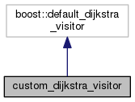

#include <structs.hpp>
Inheritance diagram for custom_dijkstra_visitor:

Collaboration diagram for custom_dijkstra_visitor:

Public Member Functions | |
| template<typename Graph , typename Vertex = Default_Vertex> | |
| void | initialize_vertex (Vertex u, const Graph &g) const |
Detailed Description
Custom visitor implementing the "working" parameter
The documentation for this class was generated from the following file:
- src/structs.hpp